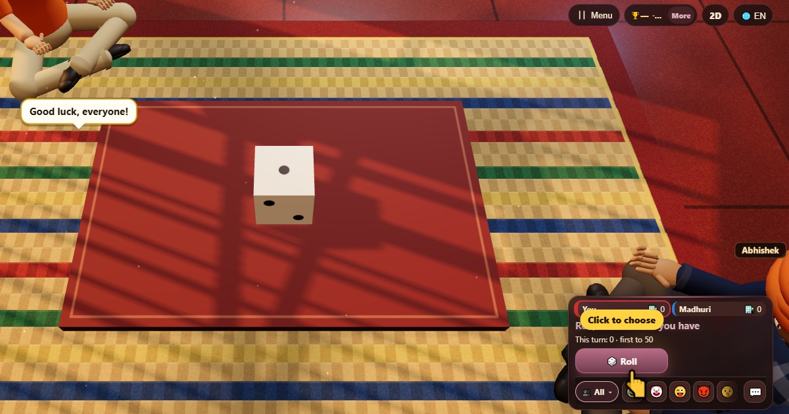

피그 (주사위) (Pig)
- 👥 2–4 명
- 주사위 게임
- 🆓
한국어 가이드
계속 굴릴까, 점수를 지킬까? 1이 나오면 그 턴은 0점.
English name: Pig

하는 방법
- 내 차례에 주사위를 굴려요. 2에서 6까지는 이번 차례 합계에 더해져요.
- 원하는 만큼 계속 굴리거나, 멈추고 이번 차례 합계를 저금해요.
- 1이 나오면 이번 차례 합계를 잃고 차례가 넘어가요.
점수
저금한 점수만 세요.
이기는 방법
목표(빠른 게임 50, 클래식과 주사위 두 개 100)에 닿으면, 나머지 모두에게 뒤집을 마지막 차례가 한 번 있어요. 그다음 저금이 가장 많은 사람이 이겨요.
자주 묻는 질문
왜 피그라고 하나요?
확실히 아는 사람은 없어요. 적어도 1940년대부터 이 이름으로 해 왔어요.
한 판은 얼마나 걸리나요?
5~10분쯤이에요.
플레이 방법
- 게스트로: 가입도 로그인도 없이 이름만 고르고 바로 플레이.
- 컴퓨터와: 아무도 없으면 빈자리는 컴퓨터가 채워요. 쉬움, 보통, 어려움 중에서 선택.
- 온라인으로: 전 세계 플레이어가 있는 공개 테이블에 앉아 보세요.
- 가까운 친구와: 휴대폰 한 대로 게임을 열고 코드나 QR 코드를 공유하면 친구들이 각자 휴대폰으로 참여해요.
- 휴대폰 한 대로: 차례대로 휴대폰을 넘기면 가족 모두가 한 대로 즐길 수 있어요.
다른 언어
- हिन्दी: पिग (पासा)
- Hinglish: Pig (dice)
- Español: Pig (dados)
- Português: Pig (dados)
- Français: Pig (dés)
- Deutsch: Pig (Würfel)
- Bahasa Indonesia: Pig (dadu)
- Türkçe: Pig (zar)
- Italiano: Pig (dadi)
- 日本語: ピッグ（サイコロ）
- 中文: 猪骰子
- Русский: Свинья (кости)
- اردو: پگ (پانسہ)
- नेपाली: पिग (पासा)
- বাংলা: পিগ (ছক্কা)
- English: Pig · 전체 규칙 (영어)
모든 게임


ChitPlay에는 실제 돈, 내기, 상품이 없어요. 점수는 가치가 없습니다.